The day she stopped reaching for my hand
The moment I realized photographs aren't about how things looked — they're about how things felt.
A family photography passion project · Delaware & beyond
Honest, unhurried portraits of families being families — the giggles, the chaos, the quiet in-between moments you'll wish you could hold onto. Because one day, you will.
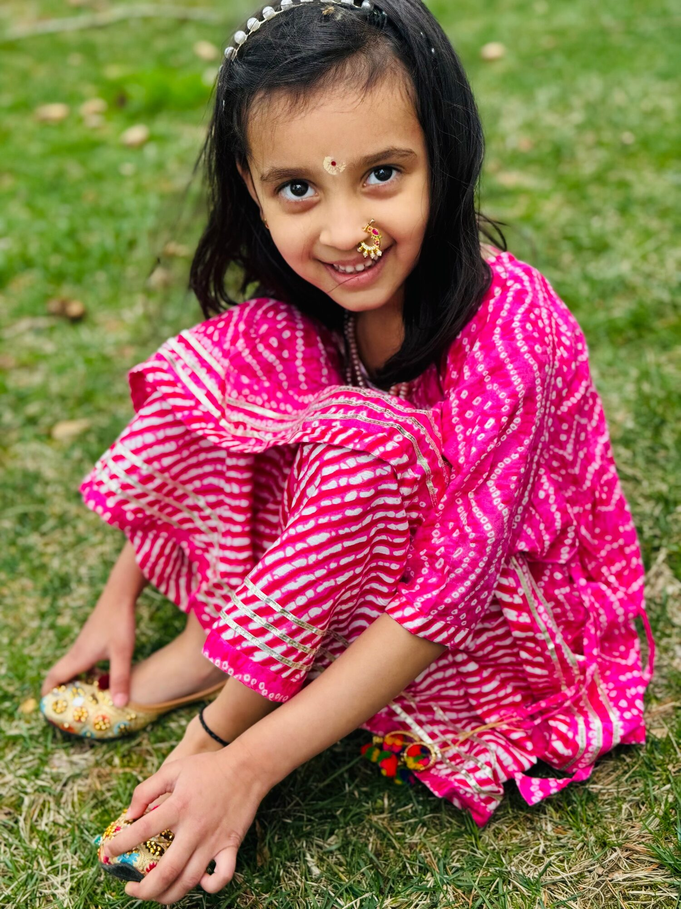
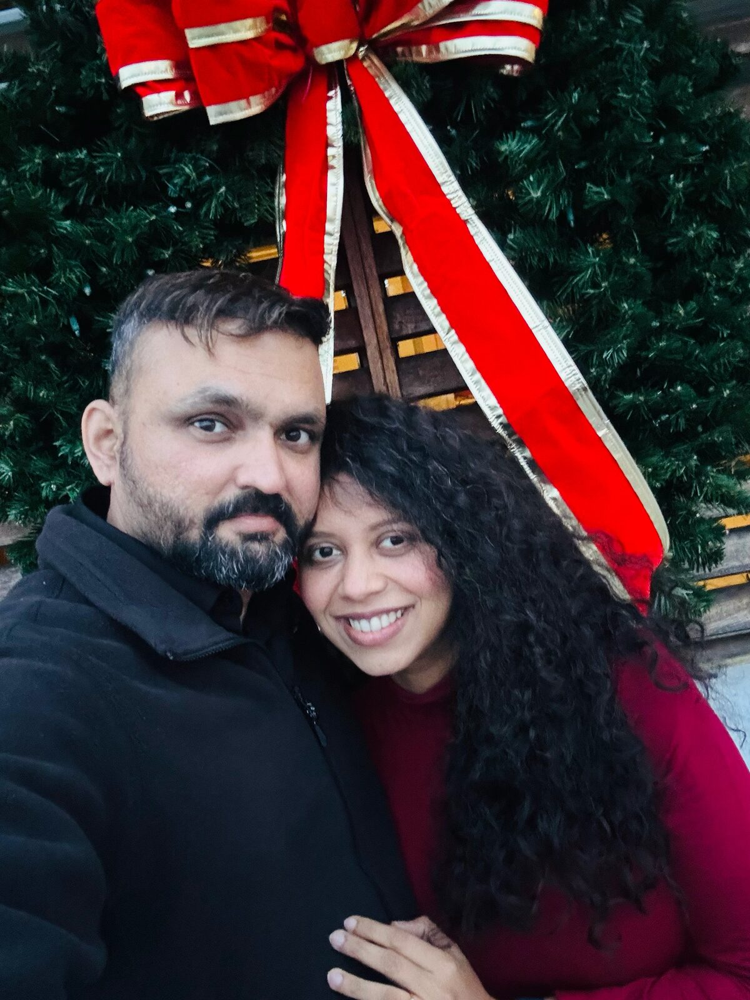
Why I pick up the camera
One day you're holding a newborn who fits along your forearm. Then you blink, and she's correcting your pronunciation and asking to borrow your headphones. Nobody warns you that "they grow up so fast" is not a cliché — it's a deadline.
That's why I photograph families. Not the stiff, everyone-say-cheese kind of photos — the real ones. The way your toddler laughs with her whole body. The way grandpa watches the birthday candles. The way you look at your people when you think no one's watching.
Right now this is my passion project — I'm building my craft, growing my portfolio, and always happy to meet more families and tell more stories.
Time flies. I'd love to help you remember it.
— Nikhil, Lightloom Stories
Portfolio
Three small collections — from the waiting, to the first weeks, to the years that fly. Every session is different because every family is.
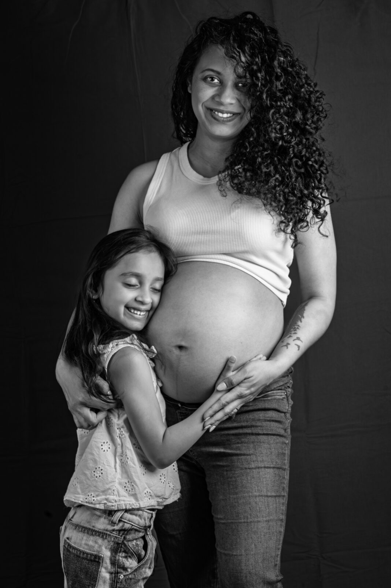
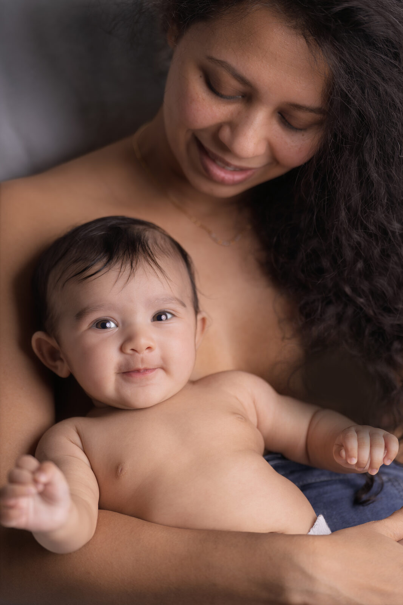
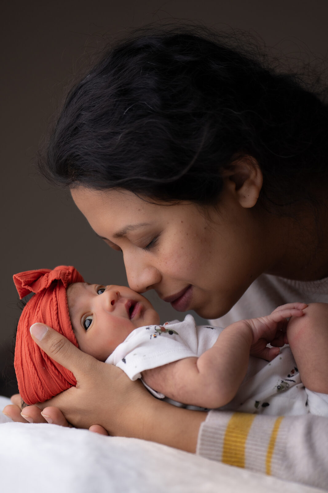
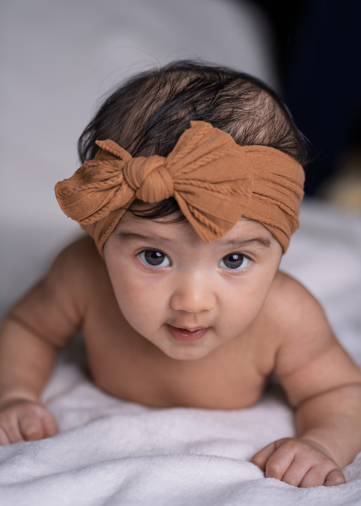
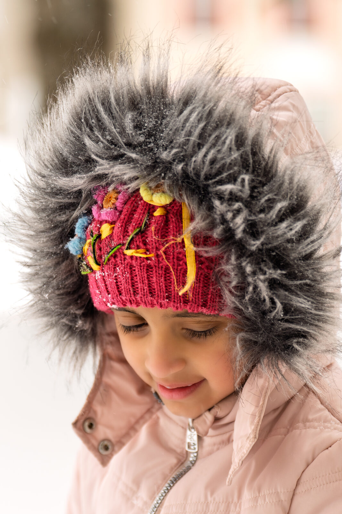
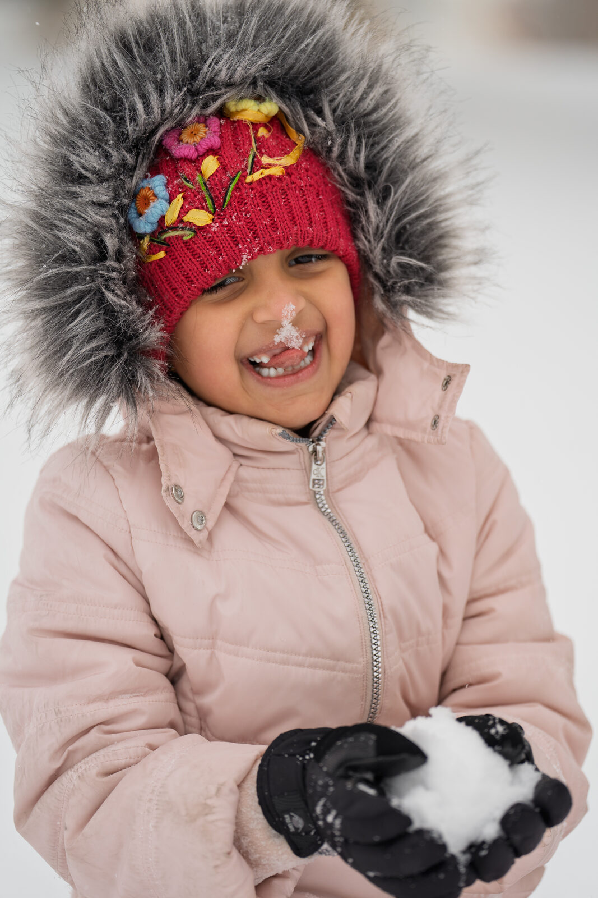
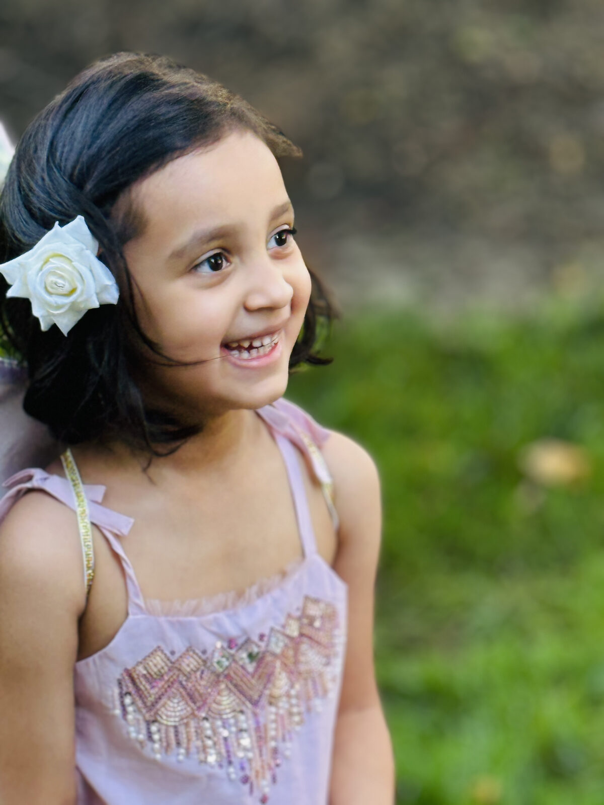
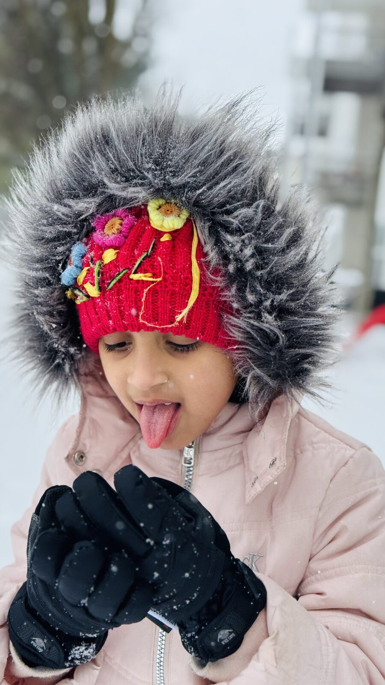
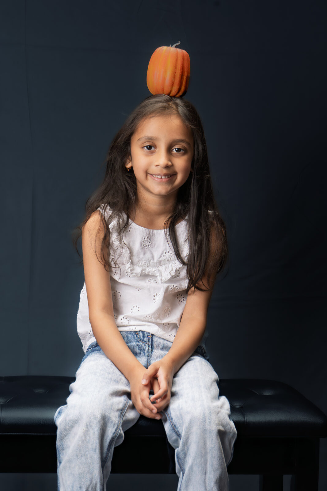
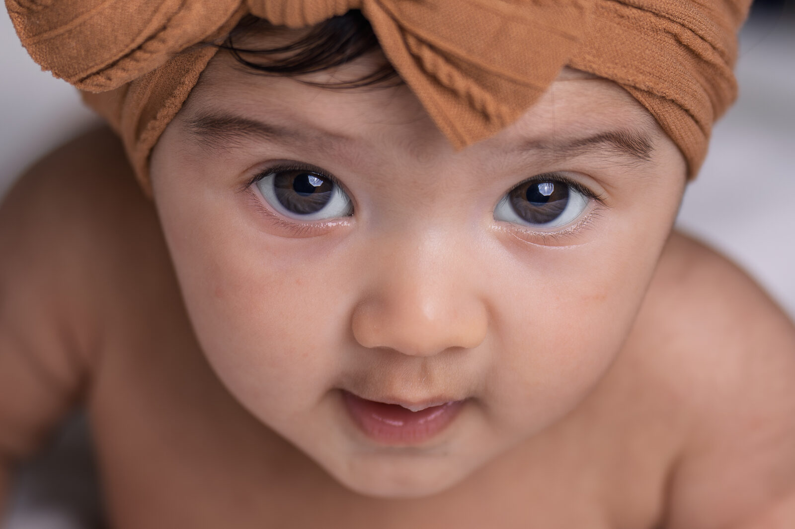
My approach
However I find myself behind the camera — a newborn's first week, a family in the park, the quiet before a baby arrives — a few things stay the same.
I'm not a "everyone say cheese" photographer. I'd rather wait for the real laugh, the in-between glance, the moment everyone forgets the camera is even there. That's where the good frames live.
Good light does half the work. A home by a window, a park at golden hour, a soft studio backdrop — I chase the light that already makes a moment feel like itself.
Every frame is part of something bigger — the waiting, the first weeks, the years that fly. I photograph families because I'm living it too, and I know how fast it all goes.
Private galleries
When I photograph a family, I share their full set of images through a private online gallery — just for them.
Journal
Notes from a dad with a camera — on photography, parenthood, and paying attention.
The moment I realized photographs aren't about how things looked — they're about how things felt.
Birthdays get remembered anyway. It's the pancake mornings and backyard evenings that quietly disappear.
A relaxed take on dressing a family for photos — and why matching outfits are overrated.
Let's connect
The easiest way to reach me is Instagram — send a DM and tell me about your family. I reply personally, usually within a day.
Based in Newark, Delaware — and always happy to connect with families across PA, NJ, NY & the DMV area.
Prefer email? hello@lightloomstories.com
Lightloom Stories is a personal passion project — a place to share my photography and grow my craft. It isn't a business, and I'm not offering paid services or accepting bookings. Just a dad who loves making pictures, happy to connect with other families who love them too.